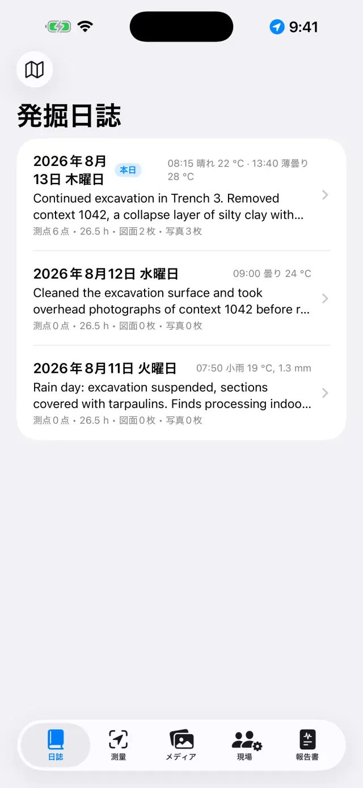
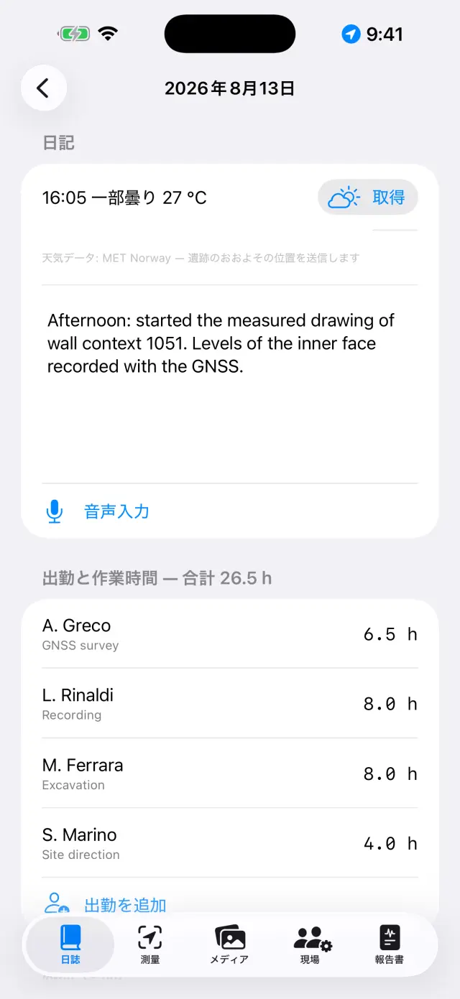
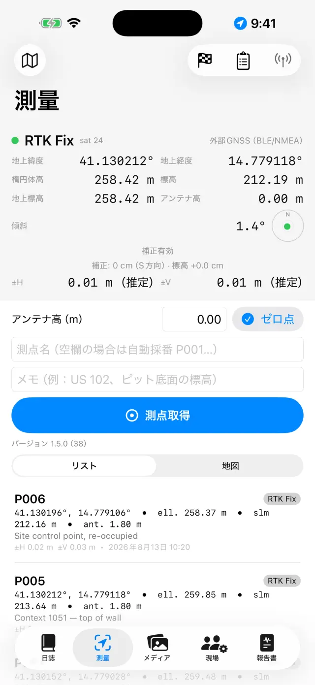
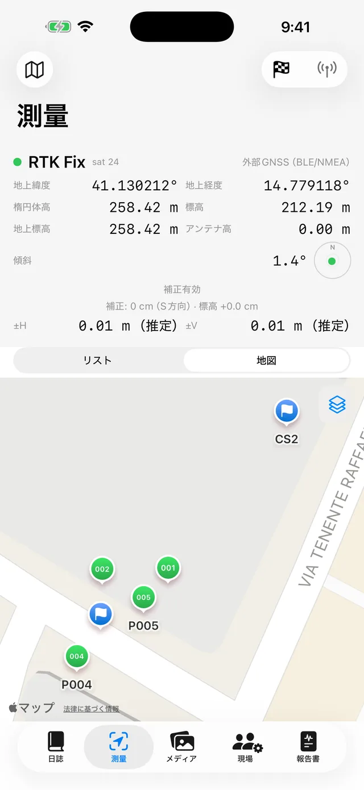
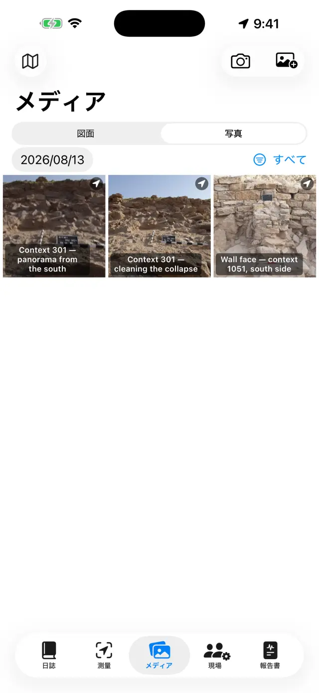
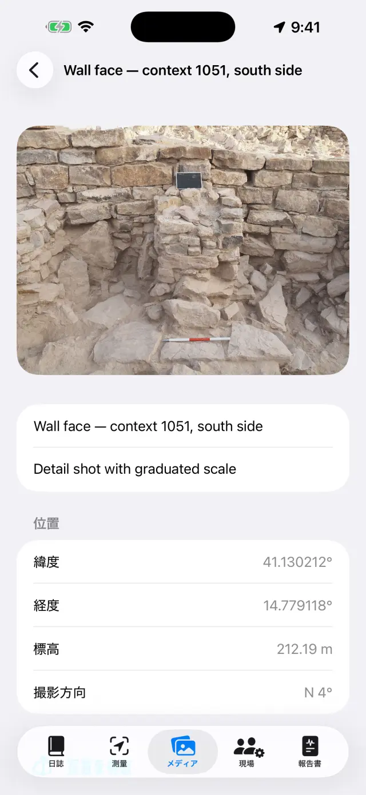
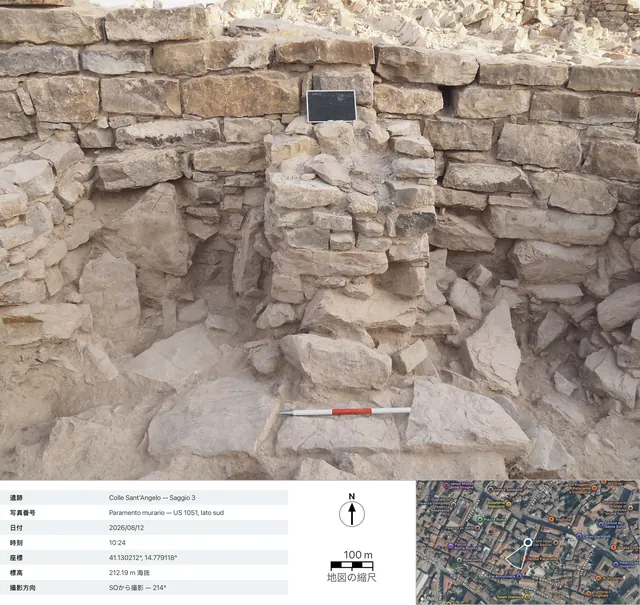
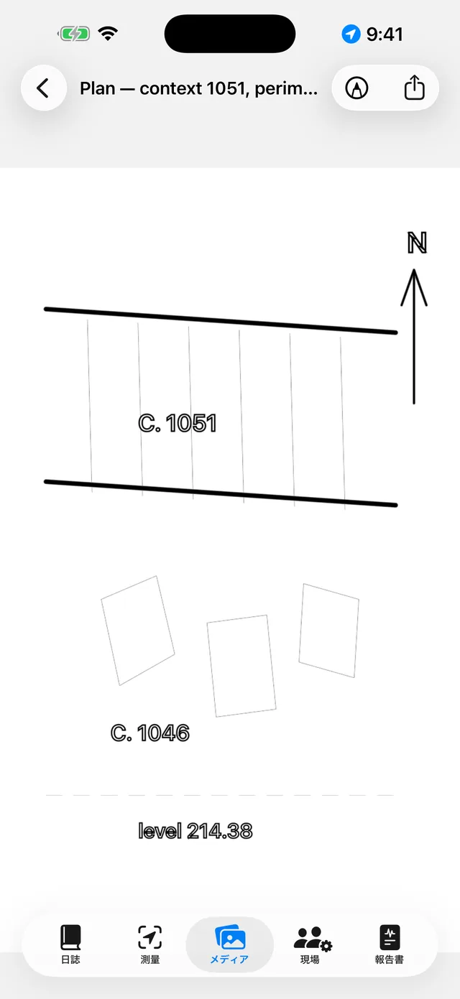

Italiano English Deutsch Español
Français Português Polski Română
Magyar Русский العربية 简体中文
日本語 한국어 Türkçe فارسی
Ελληνικά
Giornale di Scavo — 使い方ガイド
iPhoneとiPadのためのデジタル発掘日誌です。100%オフラインで、データは常にお使いの端末に保存されます。
ひとことで言うと
考え方はひとつだけです。発掘の一日一日がひとつのページにな
り、自動的に埋まっていきます。記録はそれぞれの場所で行います——測量でGNSS測点
を、メディアで写真を、現場で作業時間を——すると、その日のページが
日誌の中ですべてを自動的に集めてくれます。週の終わりや発掘の終わり
には、報告書はそれらのページから自動的に作られます。
典型的な一日
- 朝その日のページを開き、天気と日記を記録します（音声入力で話して入力することもできます）
- 出勤現場で出勤者とその時間を記録します
- 測量GNSS測点を取得します。RTKを使う場合は先に基準点を点検します
- 写真メディアから撮影します。座標は自動的に付加されます
- 図面写真の上から断面図や平面図をなぞります（デジタルトレーシングペーパー）
- SU掘り進めたSUのカードとその関係を更新します（SU）
- 出土遺物箱を前にして、その日に出てきたものを記録します（現場 → 出土遺物）
- 夜報告書タブから日次報告書を生成します。すぐに送信できるPDFが完成します
はじめに
- 初回起動時にはサンプルの遺跡がすでに用意されています。自分の遺跡を作成する
には、上部の遺跡名（🗺アイコン）をタップし、新規遺跡…を
選んで名前を付けます（例：「Colle Sant'Angelo — トレンチ3」）。
- 使用中の遺跡名は常に上部に表示され、すべてのタブにその遺跡のデータが表示さ
れます。遺跡を切り替えるには、名前をもう一度タップします。一覧は「自分の遺
跡」という見出しの下にあり、遺跡名を変更…を使えば、何も失わずに名
前を修正できます。
- 求められたら権限を許可してください。位置情報（測点のため）、
カメラ（写真のため）、マイク（音声入力のため）、
Bluetooth（外部受信機を使う場合のみ）です。
6つのタブ
📓 日誌
- ある日をタップするとそのページが開きます。その日の日記、天気、出勤、測
点、写真、図面がすでにまとめられています。
- 日記を書くか、音声入力をタップして話します。文字起こしは端末上
で行われるため、ネットワークがなくても使えます。
- 天気は手入力もできますし（例：「晴れ、28°C、微風」）、取得を
タップしてノルウェー気象局にその時点の天気を問い合わせることもできます。取得に
はネットワークが必要で、有効なのは本日のページのみです。昨日の天気はもう取得で
きません。午後にもう一度タップすると、記録が追加されます。手入力した内容は常に
優先されます。
- 取得時に外部へ送信されるのは、約11メートル単位に丸められたおおよその位置情
報だけです。報告書ではこの行が報告書の言語で表示されます。

発掘日の一覧
ある一日のページ🧱 SU — 層位カード
層位単位ごとに1枚のカードを作り、SU同士の関係はリンクとして記録します。記録
用のSUカードもハリス・マトリックスも、ここから作られます。
- SUタブで+をタップします。アプリが次の番号を提案し
（変更できます）、種類と定義をたずねます。番号は遺跡内で一意です。あとから
変更で変えることができ、その出土地点の箱も一緒に追従します。
- カードには、識別（種類、定義、調査区または区画、グリッド）、寸法と標高（長
さ、幅、厚さ、最低・最高標高）、記述（色、締まり、含有物）、解釈、年代、開始日
と終了日、担当者が入ります。入力している間に自動で保存されます。
- 定義、色、締まり、含有物、解釈、年代の横にはシソーラスのボ
タン（小さな本）があります。標準の語彙か自分の用語から選べば、掘る人が変わって
もカードの表記がそろいます。含有物は複数選べます。探している語がなければ、シー
トが追加を提案します。自分の用語はすべての遺跡で使え、SUタブの⋯メニューにある
シソーラスで管理します。
- 関係を追加：関係（覆う、切る、埋める、に接する、と結合、と同一、
およびそれぞれの逆）を選び、相手のSUの番号を入力します。関係は一度だけ記録さ
れ、相手のカードには逆向きで表示されます。101が102を覆うなら、102には「101に
覆われる」と表示されます。相手のSUにまだカードがなければ、空のカードが作られま
す。すでに記録された層序と矛盾する関係は、理由の説明とともに拒否されます。
- 遺物のセクションには、出土地点にそのSUが書かれた箱（「SU 102」「MSU 12」）
が表示されます。手作業でつなぐ必要はありません。遺物を追加を使う
と、出土地点が入力済みの遺物カードが開きます。
- ⋯メニューのハリス・マトリックスは、関係から層序を描きます。最も
新しいSUが上、同一または結合したSUはひとつの枠に、切り合いは破線、石積みは灰色
の背景です。二本指で拡大でき、画像として共有できます。
📍 測量
- 上部のパネルにはリアルタイムの位置情報が表示されます。座標、高さ、精度、
Fixの種類（GPS / RTK Float / RTK Fix）です。
- ポールを使用する場合はアンテナ高（m）を設定します。測点の標高は
自動的に地面の高さに換算されます。
- 測点取得をタップします。名前は自動採番されます（P001、P002…）
が、自分で名前を入力することもできます（例：「US 102 — 底面標高」）。メモを追
加することもできます。
- リストと地図を切り替えると、測点を実際の場所で確認
できます。地図では地籍図や別のWMSサービスを有効にできます。
- 基準点（🏁）には専用のセクションがあります。CSVからインポートするか、自分
で作成し、リアルタイム点検を開いて、ポールの先端を鋲に当てたまま、
測量を始める前にΔ北/Δ東/Δ標高の誤差を確認します。
- 水準野帳の下にあるのが、光学レベルのための現場用野帳です。測
点、後視・前視の読み、出発の基準点から計算する標高、そして閉合の確認まで記録
します。水準測量で得た点は、GNSSの点と同じように標高とともに遺跡に加わりま
す。
- LiDARスキャナのある端末（iPhone 12以降のPro、iPad Pro）
には3D計測が現れます。面が再構成される
までゆっくりと画面に収め、それから測りたい2点をタップすると、距離、水平距離、
高低差が読み取れます。基準点に固定で標高の分かっている基準点を選
び、地面のその位置をタップすれば、それ以降の計測には両端の標高も付いてきます。
確定は計測をその場に残し、測定を破棄は捨て、
日記に書き写すは文章にしてくれるので、確定する前に直せます。これは
光学的な計測で、アプリも「LiDAR ±cm」と書いてそのことを明かします。高低差や、
その場でとっさに取る長さのためのものであって、GNSSにも水準測量にも代わりませ
ん。スキャナのない端末では、ボタンそのものがありません。
- パネルの下にはNMEA記録があります。外部受信機の生の流れは、そのままファイルに保存されます——
アンテナの電源を入れると記録が始まり、切ると終わるので、こちらで覚えておく必
要はありません。疑わしい一日を読み直すときや、後処理をする人に生データを渡す
ときに役立ちます。ファイルは共有も削除もできますが、記録中のものだけは例外で
す。一覧は受信機の電源が入っていなくても開けるので、昨日のファイルにもいつで
も手が届きます。

測量のGNSSパネル
地図上の測点と基準点各測点には2種類の高さが保存されます。楕円体高
と標高です。端末内蔵のGPSでは標高が取得できない場合があり、その場合は外部受信
機が必要です（下記参照）。
📷 メディア
- カメラボタンで撮影するか、写真ライブラリからインポートします。
- 写真は自動採番され（F001、F002…）、直近に取得できたGNSS位置情報で位置情報
が付加されます。
- 撮影時にはコンパスから撮影方向も記録されます。写真の詳
細や報告書では「SOから撮影 — 214°」のように表示され、真上から撮影した写真
（平面図や遺構の底面など）では、上辺の向きを示す直下撮影の表記になります。コ
ンパスに干渉がある場合はアプリがそれを知らせます。
- 写真をタップするとタイトルとメモを設定できます（例：「US 102、北から撮
影」）。
- 写真カードを共有は記録用
の写真カードを生成します。写真の下に撮影データ（遺跡名、番号、日付
と時刻、座標、標高、方向）が付き、位置ピンと撮影方向のコーンを示す衛星画像、
地図の縮尺バー、北矢印が加わります。地図にはネットワークが必要です。ネットワ
ークがなくてもカードは生成され、データパネルが広くなります。
- 仮想縮尺は、現場で用意できなかった基準を写真の上に置きます。ま
ず写真を較正です。分かっている距離の両端——定規の一目盛り、煉瓦の
一辺など——をタップして、その長さをセンチメートルで申告します。あとは必要なも
のを置くだけです。5cmスケールバー、10cmスケールバー、
20cmスケールバー、50cm測量ポール、
1m測量ポール、2m測量ポール、10×10cm正方形、
基準十字、北矢印です。要素ごとに見え方
（平らなバー、実物の測量ポール、
目盛り付き定規）、大きさ、太さ、向きを選べます。動かすときは
長押ししてからドラッグしてください——こうすれば、ピンチでズー
ムしてもうっかり動いてしまいません。
- 計測を追加は、写真の上の好きな距離を2回のタップで測ります。数値
が保存されることはありません。較正をやり直せば、すべてのラベルがひとりでに書き
直されます。アプリで真上から撮影した写真では、北矢印は記録された方位角にすでに
向いた状態で生まれ、報告書もそう明記します。自分で回すと、その表記は「申告」に
変わります。縮尺付きで共有では、置いたものを焼き込んだ写真の複製が
出てきます——写真を共有のほうは、EXIFを持ったままの元の写真で
す。
- 一括処理（メディアの上
部メニュー）は、ライブラリからまとめて選んだ写真を次々とカウントと計測に通しま
す。写真は一枚ずつ撮影日を持った遺跡の写真になり、それぞれに確認待ちの
新しい遺物カードができます。処理のあいだ画面は消えません。途中
で抜けたり中断したりしても、できあがった写真は下書きとして残り、
一括処理を再開で続きから始まります。最後に確認の画面がカードを一枚
ずつ渡してくるので、出土地点、種別、数量を直して確定します。

写真ギャラリー
写真の詳細画面：座標・標高・撮影方向
書き出した写真カード：撮影データ、撮影方向のコーンを示す衛星画像、地図の縮尺バー、北矢印🧮 カウントと計測（メディア内）
破片を並べたトレイを真上から撮れば、アプリが数えて測ってくれます。これは
出土遺物の写真の上で働きます。その遺物カードから写真を開いて
カウントと計測をタップします。
- まず縮尺です。アプリは写真の中のスケールバーを自分で探し
ます。見つかれば何マス読んだかを伝えてくるので、1マスが何センチか（1、2、5、
10cm）をあなたが申告して提案を使うをタップします。見つからなけれ
ば、既知の距離の両端を手でタップします。校正しないを選ぶこともでき
ます。そのときは数を数えるだけで、測定値はないとアプリが書きます——でっち上げ
たりはしません。
- モデルが写真のすべての形を切り抜きます。数十秒かかることがあります。現れる
のは提案であって結果ではありません。タップで形をひとつ除外
し、もう一度タップで戻します。統合は、割れて二つに写っている同じ一
点をひとつの形にまとめます。範囲を限定では指でトレイの囲いを描き、
探索はその内側だけになります。詳細パスは何も見つからなかったところ
だけをやり直します。疑わしい項目——背景に見えるもの、シート、
影——はまとめて、ひと息に除外できます。
- 形状の材質では一点をタップして、それが何かを言います。
すべての形状の材質は全部にまとめて与えるか、まだ何もないものだけに
与えます。材質を提案は端末上のモデルに当てさせるものです。これは確
かめるべき提案であって、あなたの選択がいつでも勝ちます。
- 次へで確認の用紙が開き、文章はもう書かれています。個数、寸法
（長辺×短辺の順）、そして正直な断り書き——測れない形があれば「うち…個は信頼
できる測定値なし」と入ります。写真にラベルが写っていれば、アプ
リは読み取りを試み、結果を必ず伝えます。「読み取ったラベル: …」か、「写真に読
み取れる文字がありません」のどちらかです。
- スイッチは、埋めるべき空欄があるときだけ現れます。
個数を数量として使用、記号として使用、
出土地点として使用です。すでに自分で書いたものが上書きされることは
決してなく、メモは継ぎ足されます。二度目の処理は一度目の後ろ
に付き、その場所を奪いません。文章は直せます。メモに入るのは、そこで読める文章
そのものです。
- あとで写真の詳細画面に戻ると、図形の番号で番号を出したり隠した
りできます。そこで見えているとおりに、共有や報告書にも出ます。形をタップすれば
それが何番かが分かります（「7: 4.2×2.8 cm」）。写真が較正されていないときは、
数字を出すかわりにラベルがそのことを伝えます。
測定が成り立つのは、較正した2点が乗っている面
の上だけです。写真は真上から、トレイをセンサーと平行にして撮ってください。宣言
している目安は、きちんと収まった破片で±2mmです。立っている破片や写真の縁にあ
る破片は、その約束の外にあります。
✏️ 図面（メディア内）
- 新しい図面を作成し、遺跡の写真を背景として選びます。これがあなたのデジタル
トレーシングペーパーです。図面は複数の日にまたがって続けることができます。写真
を置かないこともできます。白いトレーシングペーパーの上でも同じように描けま
す。
- 指またはApple Pencilで層、切り合いの線、石をなぞります。ピンチで
ズームできます（最大6倍まで、2本指のダブルタップで1倍に戻ります）。
写真が線を隠してしまうときは、カメラのメニューから背景の不透明度…
を選び、5%から100%のあいだで必要なところに合わせます。薄くなるのは写真で
あって、図面ではありません。この設定は図面に残り、PDF、DOCX、PNG、そして
凡例付きでエクスポートでも有効です。
- 残りはすべてツール（ツールバーのスパナ）の中にあり、そこが7つの
モードの目次になっています。テキストボックス、トレース、写真の縮尺、標高のある点、
ハッチング、線のスタイル、仮想縮尺です。同時
に有効にできるのはひとつだけで、チェックがどれかを示します。
有効なあいだ指は描かず、そのツールを操作します——描画に戻るには、チェックの付
いた項目をもう一度タップします。画像に対して働く3つ（トレース、縮尺、標高のあ
る点）は、背景写真があるときだけ現れます。
- テキストボックスでラベル（例：「US 1002」）を置けます。位置の
移動、ピンチでのサイズ変更ができ、4種類のフォントから選べます。
- トレースは、タップした対象物
（石や層の境界など）の輪郭を認識し、線に変換します。色、太さ、線のスタイルは
モードを抜けずに変更でき、輪郭は階段状ではなく滑らかに仕上がります。すべて端
末上で行われ、ネットワークは不要です。
- トレースの中のすべてトレースは、写
真全体をひとりで一巡します。開始シートで見た目を決め——輪郭のみ、
あるいはハッチング、必要ならカラーの下地も——開始を押し
ます。バーが進み具合を伝え、数十秒かかります。現れるのはプレビュー
であって図面ではありません。形の内側をタップすると除外され、もう一度
タップすると戻ります（重なった形では、指の下にある小さいほうが優先されま
す）。詳細パスは何も見つからなかったところだけをやり直し、
適用で残ったものが図面に入ります。適用するまで、図面には手が付きま
せん。
- 写真の縮尺（定規）ツールでは、既知の距離の両端——標尺の一区間
など——をタップして、実際の距離を入力します。写真に縮尺が設定され、以降の書
き出しはすべてメートル単位になります。
- 標高のある点を使うと、遺跡のGNSS測点（または手入力した点）の
十字マークを写真の上に置けます。名前・標高・座標は、引き出し線の付いたドラッ
グ可能なラベルに表示されます。値が図面を隠してしまうときは、選択したラベルを
ピンチして小さくしたり大きくしたりできます。
- ハッチングは形を塗りつぶします。閉じた形の内側
をタップすると、そこが埋まります。慣用の10種類——石積み／石、
煉瓦、モルタル／漆喰、粘土、
シルト、砂、礫、炭／灰、
岩盤、木材——に加えてカラーの下地（不透明度
を持つ色）があり、単独でも組み合わせても使えます。形が別の形の中にあるとき
は、指の下にある小さいほうが優先されます。塗りつぶしを削除で消せま
す。写真は必要ありません。塗りつぶしは描かれた形に対して働くので、白いトレー
シングペーパーの上でも使えます。
- 線のスタイルはすでに描かれた線に装いを与えま
す。線をタップして実線、破線、点線、
一点鎖線から選び、太さを調整します。このスタイルで描くに
すると、以降の線は最初からその装いで生まれます。スタイルを解除で線
は元の実線に戻ります。これは画面上の効果ではありません。破線の一本一本は本物
の線分で、PDF、DOCX、PNG、SVG、DXFでもそのまま残ります。
- 仮想縮尺は、写真と同じ基準を図面にも持ち込みます。スケールバ
ー、測量ポール、正方形、基準十字、北矢印、そして2回のタップで測る計測です。長
さを持つ種類は、図面に縮尺があること、つまり写真の縮尺を求めます。
既知の距離がなければ、アプリは描くかわりに理由を説明します。SVGとDXFでは、これらの要素は専用のレイヤーに
ベクターとして出てくるので、GISの定規で測った値がラベルと一致
します。
- 凡例付きでエクスポート：画像の下
に白い帯が付きます——縮尺が設定されていれば縮尺バー、真上から撮影した写真に
は北矢印、正面から撮った写真には「…から撮影」の表記です。
- ベクターでエクスポート：図面用の
SVG、またはGIS用のDXFです。真上から撮影した写真に座標付き
の標高のある点を2つ以上置くと、DXFはUTM座標系で座標付けされ
、QGISでは自動的に正しい位置に配置されます。縮尺だけの場合はローカル座標（メ
ートル）で出力されます。どちらもない場合はアプリがそう伝え、単位のないファイ
ルは作られません。不透明度についてはSVGだけが例外です。元の写真ファイルをその
まま埋め込むため、薄くした背景もSVGの中では元の濃さで出てきます。
- 完了したら写真を非表示にします。きれいな図面だけが残り、報告書にすぐ使えま
す。

デジタルトレーシングペーパー👷 現場
- その日の出勤を記録します。各人の氏名、職務、作業時間です。
- 機材の在庫と、それぞれの担当者を管理します。
- 出土遺物の下には、発掘から出てきたものの記録簿があります。すで
に登録した行の数が、名前の下に書かれています。
📦 出土遺物（現場内）
本当の山場はカメラではありません。一日の終わりに箱を並べて座り、疲れた手を
汚したまま、ひとつずつ打ち込んでいくあの時間です。ここにあるものはすべてその時
間のために作られています。
- 現場 → 出土遺物 → +。カードは今日の日付
と直前に使った出土地点がすでに入った状態で開きます。二行目か
らは、記録はほとんどタップするだけです。入力欄は、その遺跡ですでに使った出土地
点を候補に出します。
- 欄は実際に書き込む順に並んでいます。出土地点（例：「US 102」）、
種別、単位付きの数量（破片、点、袋、箱、グラ
ム）、箱や袋の記号、状態（未洗浄、洗浄済、
注記済、引渡済）、メモ、日付です。
- 用意されている種別は11種類——土器、煉瓦、
動物骨、人骨、金属、ガラス、
石器、モルタル・漆喰、木材、試料、
その他——ですが、自分で書くこともできます（「彩色漆喰」など）。そ
の場合はどの言語でもその言葉のまま残ります。アプリが翻訳するのは、アプリ自身が
提案した項目だけだからです。
- 数量は空のままでもかまいません。「こういうものがあった」とだけ言って数えな
い行があってよく、エクスポートでもそのセルは空のままで、ゼロにはなりませ
ん。
- カードの写真は撮影で撮るか、ライブラリから選択、ある
いは遺跡からで取り込みます。遺跡からは、まだどのカードに
も結び付いていない、ギャラリーにある写真から拾ってきます。これらは
メディアの写真と同じものです。遺物を削除しても、その写真が消えるこ
とはありません。結び付きがなくなるだけです。
- 一日のページに出土遺物の欄が現れるのは、その日に記録したものが
あるときだけです。日記に書き写すは、出土地点ごとにまとめてメモを丸
ごと添えた要約の行を提案します。それを直してから日記の末尾に加えます。二度押せ
ば二度書かれます。日記がひとりでに書き換わることは決してありません。
📄 報告書
- 種類を選びます。日次、週
次、月次、または完全な付録付きの最終
報告書です。
- 報告書の言語は17言語から選べます。アプリの言語とは独立し
ており、アプリを日本語で使っていても、報告書はドイツ語で出力できます。
- PDFを生成するほか、ロゴと写真付きのDOCX、測点
のCSV、QGIS用のGeoJSONとしてエクスポートできま
す。
- いちばん下には遺物のエクスポート（遺跡全体）があります。表計算ソフト用の遺物のCSVをエクスポートと、サムネイル付きの表
になる遺物のHTMLをエクスポートで、後者はネットワークがなくてもどの
ブラウザでも開けます。見出し、種別、単位、状態は報告書に選んだ言語で出ます。自
分で書いた文章は書いたままです。最終報告書では、出土遺物は出土地点ごとの付録に
なります。
- SUは報告書に入ります。日次・週次・月次には期間中に開始・終了したSUが入り、
最終報告書にはすべてのカードとハリス・マトリックスの付録が付きます。
- 報告書での写真表示がオンのとき、写真の代わりに写真カードを選べます。各写真はデータと地図を備えた記録カー
ドとして、報告書の言語でPDFとDOCXに収録されます。
外部GNSS受信機とNTRIP
外部受信機（センチメートル級のアンテナ）を使うと、アプリはRTK精度に到達しま
す。内蔵GPSは常にフォールバックとして利用できます。
- 受信機の電源を入れ、iPhoneのBluetoothを有効にします。
- 測量で位置情報のソースを選びます。外部GNSS（BLE/NMEA）を選び、リストから受信機を選択します。MFi受信機
や、ネットワーク経由でNMEAを配信する受信機にも対応しています。
- RTK補正のためにNTRIPを設定します。Casterのアドレス、ポー
ト、Mountpoint、ユーザー名、パスワード（端末のキーチェーンに保存されます）で
す。アプリは位置情報をCasterに送信し、補正データを受信します。
- RTK Fixに切り替わるのを待ちます。センチメートル級の精度で
す。作業を始める前に基準点で点検してください。
電波の届かない場所には、インターネットを使わない
道もあります。既知点に据えた基準局と移動局がLoRa無線で補正
データをやり取りする方法で、CasterもSIMも要りません（ESP32ブリッジを使った
DFRobotのRTKキット）。アプリから見れば何も変わりません——受信機からは補正済み
のNMEAが届くだけです——ブリッジの組み立ては別途、そのREADMEに書かれていま
す。ここはアプリのガイドであって、ファームウェアのマニュアルではありませ
ん。
バックアップと交換
- 遺跡メニューから遺跡をエクスポート（.zip）をタップします。中に
はすべてが入っています——日誌、測点、写真、図面、作業時間、基準点、出土遺物、SUカードです。
- ZIPファイルは好きな場所に保存できます（ファイル、Drive、メールなど）。これ
がバックアップです。このアプリはあえてクラウドを持たない設計になっています。
- 遺跡をインポート（.zip）…を使うと、別の端末で遺跡を再現できま
す。iPhoneとAndroidの間でも可能です。インポートは上書きも統合もしません。必
ず既存の遺跡の隣に新しい遺跡を作り、同じ名前の遺跡がすでにあれば名前に「（イ
ンポート済み）」が付きます。
⚠️ 遺跡を削除…は、遺跡とその内容をすべて削除する操作
で、元に戻せません。迷ったら先にZIPをエクスポートしてくださ
い。
無料
Giornale di Scavoは無料で、すべての機能を備えています。こ
のガイドで説明している機能はすべて含まれており、サブスクリプションもアプリ内課
金も透かしもなく、遺跡の数も無制限です。
トラブルシューティング
Bluetooth受信機が表示されない、または接続できない
次の順に確認してください。
- 受信機の電源が入っていて、他のアプリや他の端末にすでに接続されていないこ
と。
- システムのBluetoothがオンで、アプリにBluetoothの権限が与えられていること
（設定 → Giornale di Scavo）。
- 測量で選んだソースが外部GNSS（BLE/NMEA）になっていること。
- 受信機の電源を入れ直してから、もう一度検索すること。
RTK Fixにならない
- 有効なNTRIP接続が必要です。Caster、Mountpoint、認証情報を確認してくださ
い。
- 端末のデータ通信の状態を確認してください。補正データはインターネット経由
で届きます。
- 空が開けていることが重要です。密な樹木や近くの壁は信号を劣化させます。状
態が悪いとRTK Float（デシメートル級）のままになることがあります。
- 近くのMountpoint（30〜40km未満）またはVRSネットワークを選んでください。
NTRIPが接続できない
- アドレスとポート（多くは2101）を確認し、Mountpointが実在することを確認し
てください。多くのCasterは一覧（sourcetable）を公開しています。
- ユーザー名またはパスワードが間違っていると401/403エラーになります。認証情
報を再確認してください。
- 一部のネットワークでは位置情報（GGA）の送信が必要です。アプリが自動的に送
信しますが、受信機がすでにFixを得ている必要があります。
標高が空、またはゼロになる
端末内蔵のGPSでは楕円体高しか得られません。標高はGGA文を送ってくる外部受信
機から得られます。受信機がない場合でも、測点には楕円体高が保存されます。
音声入力が機能しない
- 設定でマイクと音声認識の権限を確認してください。
- 文字起こしは端末上で行われます。初回はシステムが言語モデルをダウンロード
する必要がある場合があります（このときだけネットワークが必要で、以降はオフラ
インで使えます）。
- 短い文で話してください。テキストは日記の末尾に追加されます。
地籍図（WMS）が表示されない
アプリ自体はオフラインですが、WMSレイヤーはウェブサービスなので、通信と稼
働中のサービスが必要です。イタリアの地籍図はあらかじめ設定されています。他の国
の場合は、その国の公的サービスのWMSエンドポイントを入力してください
（EPSG:3857に対応している必要があります）。データ通信の圏外でも、ベースの地図
と測点は表示されたままです。
写真に座標が付かない
写真の位置情報は直近のGNSS Fixから取得されます。先に測量を開き、位置が確定
するのを待ってから撮影してください。位置情報の権限が拒否されている場合、写真は
座標なしで保存されます。
報告書に写真やロゴがない
報告書に写真と図面を含めるがオンになっているか、また
ヘッダーとロゴでロゴが選ばれているかを確認してください。どちらも
PDFとDOCXの両方に適用されます。
誤って遺跡を削除してしまった
削除は完全なもので、データを復元することはできません（クラウドは存在しませ
ん）。以前にエクスポートしたZIPがあれば、それをインポートしてその時点の状態に
遺跡を復元できます。おすすめ：毎日の終わりにZIPをエクスポートしておきましょ
う。
「取得」がグレーアウトしている、または「天気情報利用不可」と表示される
- ボタンがグレーアウトしている場合は、過去の日のページを見ています。天気は
本日のページでのみ取得できます。
- 「天気情報利用不可」と表示される場合は、ネットワークがないか、位置情報の
元となるGNSS測点がまだ遺跡にありません。測点を1つ取得してからもう一度試してく
ださい。
写真カードに地図が表示されない
衛星画像はAppleから取得されるためネットワークが必要です。アプリは最大15秒
待ってから、地図なしのカードを生成します（データはネットワークを待ちませ
ん）。現場の低速な回線では待ち時間いっぱいかかることがあります。Wi-Fi環境で
再度お試しください。写真に位置情報が付いていない場合、地図はそもそも表示され
ません。
「すべてトレース」が何も見つけない、または見つけすぎる
- 一巡は背景写真に対して行われます。写真がなければコマンド自体がありませ
ん。また「写真を準備中…」と表示されているあいだはモデルの準備が済んでいませ
ん——お待ちください。
- 形が少なすぎるときは詳細パスを押します。最初の一巡で何も見つか
らなかったところだけを細かい格子でやり直し、見つかったものを足します。除外し
たものが戻ってくることはありません。
- 多すぎるときは、すべてを適用しないでください。プレビューで余分な形をひと
つずつタップして除外してから適用します。除外したものは図面に入りま
せん。
- 平板な写真——コントラストが低い、真昼の光、土の色が一様——では、輪郭が
少ないのは当然です。そういうときは、どこを見ているかが分かる1点タップのトレー
スのほうが向いています。
- 細かすぎる形ばかりが残るなら、輪郭のみでやり直してみてくださ
い。読みやすくなりますし、ハッチングは後から手で入れられます。
線に装いが付かない
- タップは指先ほどの半径で最も近い線を探します。線が細い、あるいは込み入っ
ているときはズームして、インクの真上を正確にタップしてくださ
い。
- 装いが付くのは線だけです。塗りつぶし、テキストボックス、
標高のある点の十字マークは線ではないので、指の下でも反応しません。
- 「この線はスタイルを変更できません」と出たときは、タップが拾った線の中に
線でないものが混じっています。指を止めたときに残る点や、読み込んだ書庫から壊
れた状態で届いた筆跡です。その点を消してやり直すか、そこから離れた場所で線を
タップしてください。点ひとつだけに装いは付きません。点で破線を作る方法はない
からです。
- タップと適用のあいだで取り消したり別のものを描いたりすると、違
う線に装いを与えないよう、選択は自動的に解除されます。線をもう一度タップして
やり直してください。
形の内側をタップしてもハッチングが出ない
- 形は閉じていて、しかもひと筆で閉じている
必要があります。指を離さずに、出発点とほぼ同じところへ戻ってください（数ミリ
のずれは許容されます）。端どうしが触れているだけの2本の線は、開いた2本の線の
ままです。誰も描いていない境界を越えて図面を塗りつぶすほうが、塗らないよりも
悪いからです。
- トレースが作った輪郭は構造上いつも閉じています。これらは必ず塗
れます。
- 形が入れ子になっているときは、その点を含むいちばん小さい
形が選ばれます——大きいほうを塗るには、小さい形の外側をタップしてくださ
い。
- 形の内側をタップしましたか、それとも縁をタップしましたか。狙うのは面で
あって、線ではありません。
DXFが拒否される、またはGISで「原点付近」に開かれる
- 座標付けされたDXFには、アプリのカメラで真上から撮影した
写真と、写真上に十分離して置かれた座標付きの標高のある点が
2つ以上必要です。
- 標尺の縮尺だけの場合、DXFはローカル座標（メートル）で出
力されます。これ自体は正しいのですが、GISでは原点付近に表示されます——アプリ
は事前にそれを知らせます。
- 縮尺も点もない場合、書き出しは拒否されます。単位のないDXFはどのGISでも意
味のある形では読み込めないためです。
背景を薄くしたのに、SVGでは写真が元の濃さで出てくる
そういうもので、これからも変わりません。SVGは写真の元のファイル
をそのまま抱え込みます。薄くした複製ではありません。薄くするには再圧
縮が必要で、それはSVGを開いて作業する人みんなにとって品質を落とすことになりま
す。背景の不透明度…が効くのは、エディタ、PDF、DOCX、PNG、そして
凡例付きでエクスポートです。写真なしのベクターが必要なら
SVG — 図面のみを選んでください。薄くした写真が必要なら、PNGで書き
出すか、報告書を経由してください。
「凡例付きでエクスポート」に北矢印が表示されない
矢印が表示されるのは、アプリのカメラで真上から撮影した写真
だけです。これは撮影時に方位角を記録するためです。正面から撮った写真には「…
から撮影」という表記が入ります（立面図の平面に北矢印を置くのは、幾何学的には
嘘になってしまうためです）。写真ライブラリからインポートした写真にはどちらも
表示されません。撮影データがないためです。
写真に「カウントと計測」が現れない
このコマンドが住んでいるのは出土遺物の写真の上だけです——
破片を切り抜く意味があるのはそこだからです——しかも、遺物カードではなく写真の
詳細画面から開きます。カードにはサムネイルしか出ません。
スケールバーが見つからない
- 認識できるのはマス目のあるスケールバー——白黒、黄黒、赤
白——とブロック状の定規です。カラーチャートや、マス目のないつるりとした定規
は、そもそも認識しません。
- スケールバーは写真の長辺の10分の1以上を占め、しかも画面の中にすべて収まっ
ている必要があります。縁で切れていると読めません。
- 何マス読んだかはアプリが言いますが、1マスが何センチかを言うのはあ
なたです。画像からは導けませんし、当てずっぽうで決めるのは縮尺について
嘘をつくことになります。
- 見つからないときは、既知の距離の両端を手でタップします。
校正しないなら数を数えるだけになり、測定値がないことをアプリが明記
します。
数が実際のトレイと合わない
- 一巡したあとに見えているのは提案です。定規、ラベル、くっきりした影、遺物で
ないものをタップで除外していき、手で数えた数と合うところまで持っていきま
す。
- ひとつの破片が二つの形として読まれたら、その二つをタップして
統合します。ひとつの番号を持つ、ひとつの形になります。
- 一巡がトレイの外まで見ているなら、範囲を限定で囲いを描きます。
探索はその内側にとどまります。
- 足りない破片があるときは詳細パスです。何も見つからなかったとこ
ろだけをやり直し、除外したものを戻したりはしません。
- メモに入る数は、あなたが確定した数であって、モデルが提案
した数ではありません。
ラベルが読まれない、または見当違いのものを提案してくる
- 結果は必ず明かされます。「読み取ったラベル: …」か、「写真に読み取れる文字
がありません」のどちらかで、黙っていることはありません。
- 自動の読み取りは間違えます。とくに手書きでは間違えます。だからこそ、確定す
る前に用紙の文章を直せるようになっています。
- 記号として使用と出土地点として使用が現れるのは、その
欄が空のときだけです。すでに自分で書いたものには触れません。
- 同じ写真に違うラベルが二枚写っていると値が定まらないので、アプリは何も提案
しません。読み取った文章はそれでも見えますし、選ぶのはあなたです。
一括処理が止まった、または入らなかった写真がある
- iCloudにあってまだ端末に降りていないライブラリの写真は読み込めません。写真
アプリで一度開いてから、エラーを再試行してください。
- アプリから抜けたり中断したりした場合、できあがった写真は下書きとして残り、
一括処理を再開が続きから始めます。済んだ分をやり直したりはしませ
ん。
- 取り込んだ写真は今日ではなく撮影した日に付きます。見当た
らないのなら、見ている日が違います。すべてに切り替えるか、その写真
の日へ行ってください。
仮想のスケールバーが実物の定規と合わない
縮尺が成り立つのは、較正した2点の乗っている面の上だけで
す。写真が斜めから撮られていれば、その面より遠くや手前に置いた要素は合いようが
ありません。面をセンサーと平行にして真上から撮り、その面の上にある距離で較正し
てください。申告した値のほうが間違っていたのなら再較正です。数値は
そもそも保存されていないので、すでに置いた計測はすべてひとりでに書き直されま
す。
「3D計測」がない、または測定がずれる
- LiDARスキャナが必要です。持っていないiPhoneやiPadでは、灰
色のまま理由も言わずに置かれているのではなく、ボタンそのものがありません。
- 「面がまだ不完全です。ゆっくり動いてください」と出たら、再構成が終わってい
ません。ゆっくり動き、点をタップする前にいくつもの角度から画面に収めてくださ
い。
- 強い日ざしや、つやのある面——大理石、タイル、塗装した漆喰——は読み取りを
悪くします。これはあくまで光学的な計測で、「LiDAR ±cm」と明記されていま
す。
- セッションが途切れると（電話がかかってきた、アプリを脇に置いた）、基準点へ
の固定は失効し、アプリがそう伝えます。もう本当ではない標高を
抱えているより、やり直すほうがましだからです。